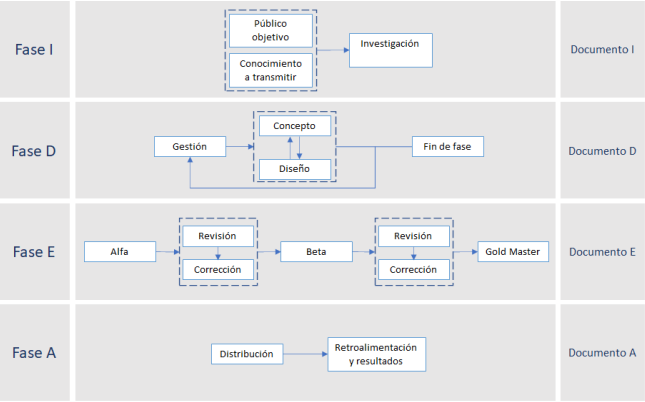

Based on the guidelines given by the PMI, the methods of video game development and the Game Design Document, a guide was developed that allows to know the most important steps when developing a training video game. Research project for undergraduate degree at ESIME Culhuacán.
Developed with:
Evidence:
Final Degree project(In Spanish)
Template with example (Available for download, in Spanish)